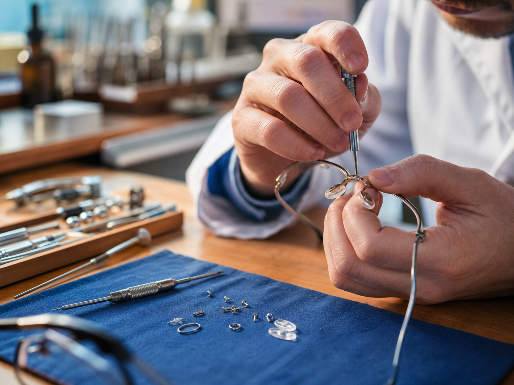
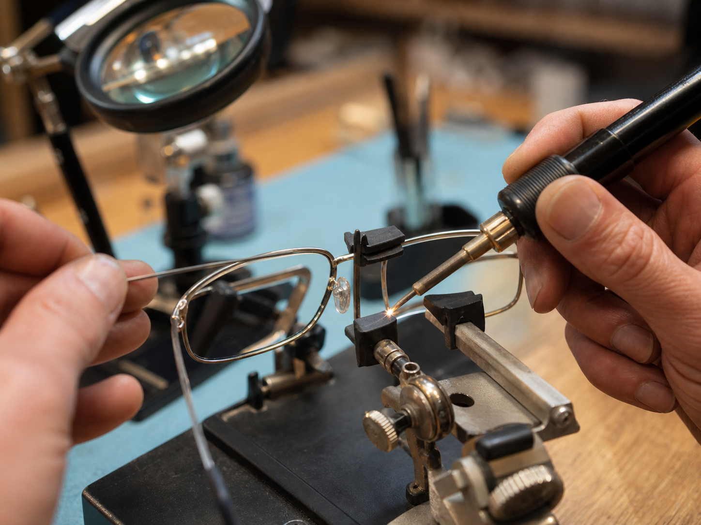

Popravke, podešavanja i precizne intervencije.
Pružamo usluge svih vrsta popravki i servisiranja naočara, bez obzira na tip ili model okvira. Veliki broj popravki rešavamo brzo i efikasno.

Zamena šrafova i nosača
Kada naočare popuste, najčešći uzrok su sitni delovi: šrafovi, nosači, papučice ili elementi koji drže staklo i ručice. Takve intervencije zahtevaju pravi alat i mirnu ruku, jer se mala greška brzo oseti u svakodnevnom nošenju.
- Zatezanje i zamena šrafova
- Zamena nosača i silikonskih papučica
- Provera stabilnosti okvira nakon intervencije

Podešavanje i centriranje okvira
Okvir mora da stoji stabilno, ali bez pritiska. Podešavamo širinu, nagib, ručice i položaj na nosu kako bi naočare pratile lice i omogućile prirodan položaj stakala.
- Centriranje okvira prema licu
- Podešavanje ručica i mosta
- Udobnost pri dužem nošenju

Zamena oštećenih delova
Kada je osnovna konstrukcija okvira dobra, često nema potrebe za novim naočarima. Menjamo oštećene ili dotrajale detalje i proveravamo da li okvir može bezbedno da nastavi da se koristi.
- Šarke, nosači i krajevi ručica
- Manji rezervni delovi za svakodnevnu upotrebu
- Procena isplativosti popravke

Lemljenje i popravka metalnih okvira
Metalni okviri traže pažljiv pristup, naročito kada se radi o spojevima, mostu ili ručicama. Pre intervencije proveravamo materijal i oštećenje, kako bismo znali da li popravka može da bude dugotrajna.
- Popravka spojeva i metalnih delova
- Precizan rad uz zaštitu stakala
- Savet kada je okvir bolje zameniti

Manje i veće intervencije na naočarima
Neke popravke su gotove brzo, a neke zahtevaju više procene i rada. Zato svake naočare prvo pregledamo, objasnimo šta je moguće i predložimo rešenje koje ima smisla za okvir, stakla i način nošenja.
- Brze intervencije i zatezanje
- Kompleksnije popravke i kombinovane zamene
- Jasan savet pre početka rada